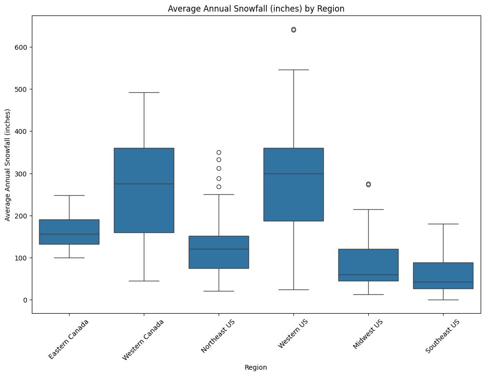
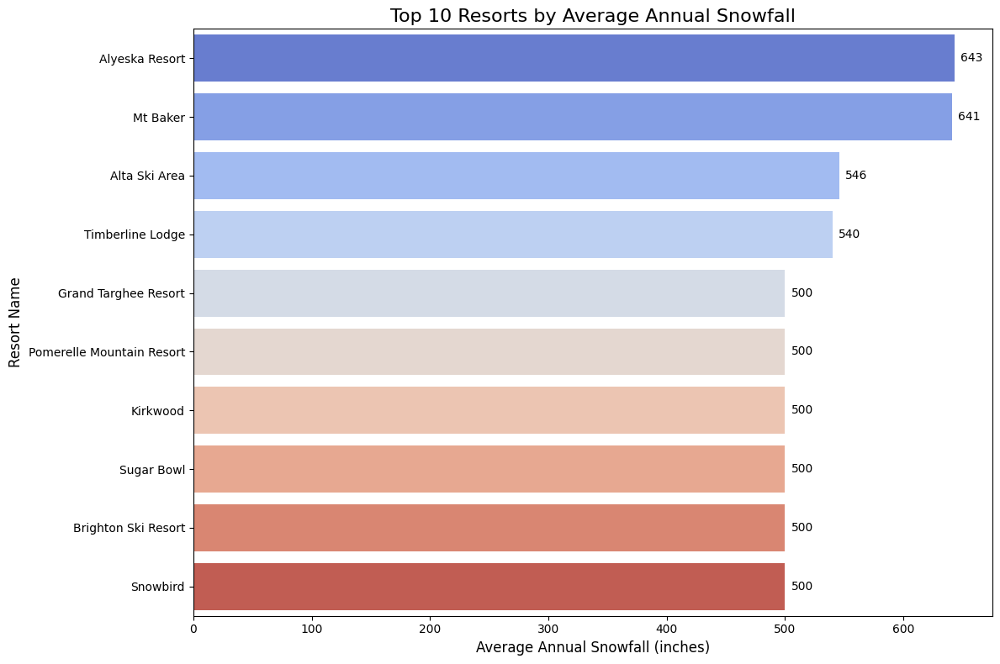

Technical Report
Executive Summary
In our preliminary project proposal, we expressed interest in examining snowfall patterns and exploring the potential to predict snowfall for skiers. However, after evaluating the data available to us, we found that a different set of questions could be addressed more effectively. Specifically, we became interested in how ski resort characteristics, such as size, elevation and geographic location, relate to annual snowfall. We also aim to identify which resorts across the United States and Canada receive the greatest snowfall. Understanding these patterns can help skiers make more informed decisions when planning trips and selecting destinations that maximize their time on the snow. After implementing a full cleaning pipeline and running exploratory data analysis (EDA), we identified clear trends: Western Canada and the Western U.S. have the highest average annual snowfall, Utah and Washington consistently exhibit the highest average annual snowfall, and high elevation is moderately associated with higher snowfall. These findings can support tourism planning, resort benchmarking, and ultimately help skiers decide where to ski.
Project Context
The motivation behind this project was to build a complete end-to-end data science workflow, including data collection, cleaning, analysis, and documentation. The main stakeholders are recreational skiers, tourism boards, and data science learners seeking insights into regional snowfall trends. Success was defined by the ability to (1) assemble a reproducible data pipeline, (2) clean inconsistencies in scraped weather/resort data, (3) generate clear EDA visualizations, and (4) interpret distributional patterns across states and provinces.
Data Sources
- _Primary dataset: A consolidated CSV of North American ski resorts containing columns for resort name, state/province, elevation statistics, acres, lift counts, and average annual snowfall. (Source: LINK!!!)
- _Data access notes: All data was acquired through scraping Wikipedia. No licensing restrictions apply.
Methodology
Data acquisition: For the data collection phase of our project, we initially planned to use the OpenWeatherMap API to obtain historical weather information. However, during preliminary testing we encountered both logistical constraints, such as rate limits and incomplete data coverage, and ethical considerations related to adhering to API usage policies. As a result, we chose to adopt an alternative data source. We ultimately collected our data from the Comparison of North American Ski Resorts page on Wikipedia. To extract the relevant information, we used the BeautifulSoup library in Python, which allowed us to systematically parse the page’s HTML structure and retrieve variables of interest. This approach ensured that our data collection process remained reproducible, transparent, and aligned with course guidelines for web scraping.
Cleaning pipeline: After web scraping the ski resort dataset from Wikipedia, the data required substantial data cleaning before the analysis could be performed. The original dataset included inconsistent column names, footnote markers, extra symbols, missing values, and non-numerical columns. The following steps were taken to prepare this dataset for analysis: Removed unnecessary columns The scraped data table included an extra column at the end that was not needed; it contained invaluable information related to our analysis. Therefore, this last column was removed. Renaming columns The remaining columns in the data table were renamed to standardized and descriptive variable names. Handling missing snowfall values Because snowfall is a central variable in this project, rows missing Average Annual Snowfall were removed. This prevented incomplete observations from biasing summary statistics and visualizations later in the process. Removing Wikipedia Footnotes and Brackets Many of the cells contained bracketed footnotes, which are common in Wikipedia tables. To remove these, we used regular expressions, which stripped out all bracketed content from every string column. This step was vital to our analysis because it ensured resort names, locations, and snowfall figures were clean and were ready to be analyzed. Cleaning Numeric columns Several of the numeric cells contained non-numeric characters such as commas, brackets, units, or parentheses. We created a function to extract only digits and decimal points and convert any of the values to floats. This allowed these columns to be used in statistical summaries and visualizations without type errors. Standardizing Categorical Columns Resort names, city names, and state/province fields were stripped of any leading or trailing whitespace. This prevented issues such as duplicate resort name that differ only by spacing. Final Dataset After doing all these cleaning steps, the dataset was ready to be analyzed. We saved the final dataset to a csv and then it was used for exploratory data analysis and visualizations.
Analysis workflow: Exploratory Data Analysis (EDA) was performed to evaluate: -Distribution of average annual snowfall -Mean snowfall by state/province -Relationships between peak elevation and snowfall -Basic geographic summarization (regional snowfall trends)
Charts included: -Boxplot of average snowfall by region -Bar charts ranking states by snowfall -Scatter plot comparing snowfall vs. elevation -Histograms and boxplots to visualize distributions
- Tooling: The project uses: -Python 3.11 -pandas, numpy, matplotlib, requests, seaborn, bs4, and streamlit -Development environment managed via uv -Tests written with pytest -A documented cleaning and analysis pipeline callable from the package root All code is fully reproducible via main.py or command-line execution.
Results & Diagnostics
We examined regional patterns in snowfall to determine which areas of North America receive the highest average levels. Our analysis shows that the Western United States and Western Canada experience substantially higher snowfall than other regions, while the Midwest and the Southeastern United States receive the least. These patterns are consistent with geographic and climatic expectations: western regions contain more mountainous terrain that promotes orographic precipitation, whereas southern regions have warmer temperatures due to their lower latitudes, resulting in reduced snowfall.

We were also curious about the correlation between certain numeric features of the data, total trails, total lifts, and average snowfall. We can see a high positive correlation between the number of trails and number of lifts. That makes sense, considering the structure of a ski resort. There is a moderate correlation between total trails and average snow fall.

We looked at the distribution of snowfall for the top 20 ski resorts with the highest snowfall. This is left skewed where there are a few resorts that receive an unusually high level of snowfall on average.

We then looked at the top 10 resorts that had the highest peak elevation. Nine out of the top 10 resorts were in Colorado. This was a really interesting finding. It seems to be that Colorado has the steepest terrain. The peak elevation was ~ 12,000 - 13,000 for these Colorado resorts. For these resorts, the average annual snowfall ranged from 235 to 450 inches. It seems that these resorts that have high elevation also have higher average annual snowfall.
After looking at the top 10 resorts for elevation, we were curious to see the top 10 resorts for average annual snowfall. The top resort was Alyeska Resort in Alaska with an average of 643 inches of snowfall each year. From these top 10 resorts, 3 of them were from Utah (Alta, Brighton, & Snowbird).

To explore geographic differences in snowfall, we examined the Average Annual Snowfall (inches) column alongside the State/Province column. We created a bar plot that displays each state or province ranked by the snowfall values reported in our dataset. From this visualization, Utah shows the highest average annual snowfall in our dataset, followed by Washington and California. These rankings come directly from the average snowfall values listed for the resorts located in each region. This plot provides a quick snapshot of how snowfall conditions vary across different areas and highlights which regions tend to have resorts with the largest reported snowfall amounts.

Next, we were interested to see how peak elevation and average snowfall are correlated. The scatterplot comparing average annual snowfall to peak elevation reveals a clear upward trend: resorts situated at higher elevations generally experience greater snowfall. While the relationship is not perfectly linear—there is still noticeable spread at each elevation level—the overall pattern suggests that elevation plays a meaningful role in increasing snowfall totals. Higher-altitude resorts likely benefit from colder temperatures and more favorable atmospheric conditions for sustained snowfall, which contributes to the positive trend observed in the plot. This pattern supports the idea that elevation is an important environmental factor influencing resort-level snow accumulation.

Discussion & Next Steps
Discussion & Conclusion
Overall, our analysis provides a clear picture of how geography, terrain characteristics, and elevation shape snowfall patterns across North American ski resorts. The regional comparisons confirm well-established climatological expectations: western regions, particularly the Western United States and Western Canada, receive significantly more snowfall due to their mountainous landscapes and favorable weather systems. Meanwhile, regions such as the Midwest and Southeast receive considerably less snowfall, reflecting their lower elevations, warmer temperatures, and flatter topography. Our exploration of resort-level features also showed meaningful structural relationships within the data. The strong positive correlation between total trails and total lifts suggests that resort size and infrastructure tend to scale together. The moderate correlation between total trails and snowfall implies that resorts with higher snowfall may be able to support more extensive terrain, though this relationship is influenced by many other factors. The distributions of snowfall further highlight the variability between resorts. Most resorts fall within a typical range. However, there are some outliers - like Alyeska in Alaska. Elevation is a vital factor in explaining snowfall differences. Resorts that have the highest peak elevations tend to receive substantially more snowfall on average. The upward trend in the elevation–snowfall scatterplot supports the idea that colder temperatures and atmospheric conditions at higher altitudes lead to greater snow accumulation. This insight is reinforced by the fact that several top-elevation resorts also appear among the highest-snowfall locations. Skiers love some good snow. Therefore, skiers can use this analysis in determining where to ski that year, or even where to book a ski trip. By understanding which regions consistently receive the most snowfall—and how factors like elevation and resort size relate to snow conditions—skiers can better identify destinations that match their preferences.
Limitations
While this project can help skiers know where to ski and book ski trips, it still has several limitations. Because the dataset was sourced from Wikipedia, the accuracy and consistency of the reported snowfall values cannot be fully verified. Additionally, the table provides only average annual snowfall rather than historical records, which restricts our ability to examine trends over time or develop predictive models. Finally, the dataset includes only major ski resorts in North America, so our findings may not be generalizable to smaller resorts or those located in other regions.
Next steps
Recommended next steps: -Integrate multi-year snowfall trends to study variability -Add climate variables (temperature, latitude, precipitation) -Build predictive models to estimate snowfall or resort conditions -Enhance geographic analysis with mapping tools (e.g., Folium, geopandas)